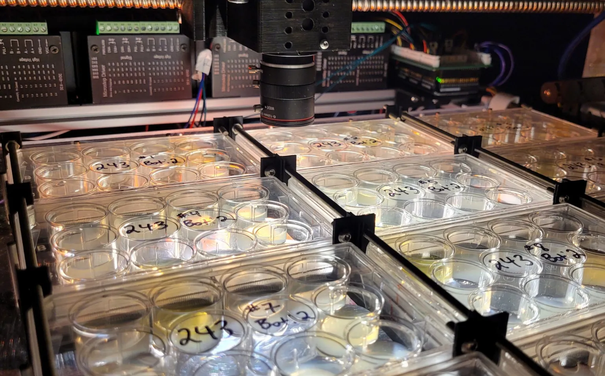
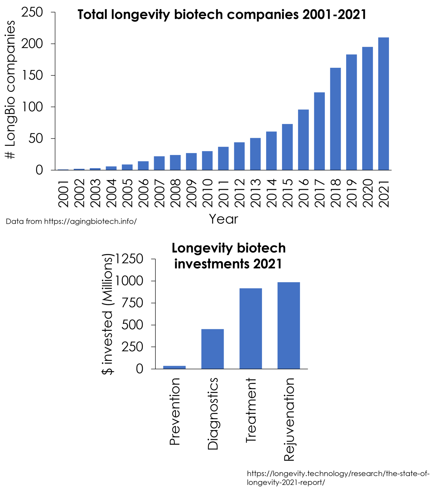
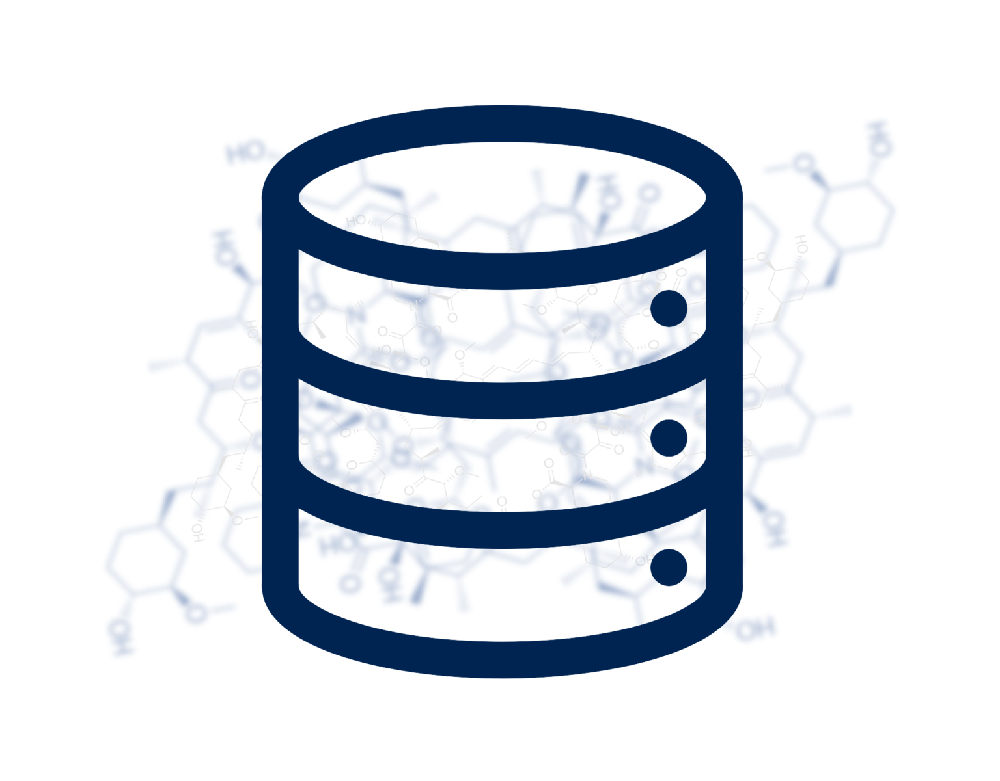
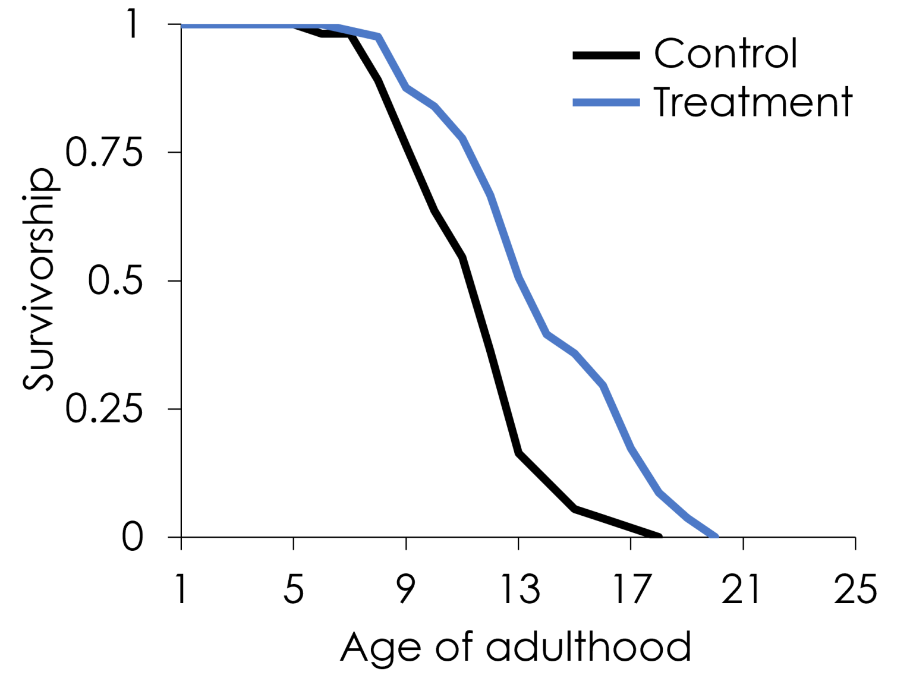
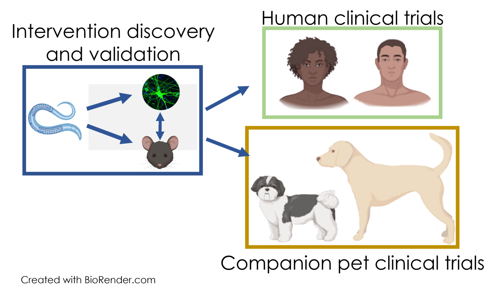

Ora’s WormBot-AI platform combines robotics, computer vision, and deep learning to run high-throughput drug screening in live animals — at a scale and speed unmatched by traditional methods. Every experiment is fully automated, from imaging to analysis, enabling our system to uncover subtle biological effects and discover therapeutic candidates that would be missed in vitro. This is drug discovery, powered by intelligent automation.

Watch WormBot-AI in real-time as it analyzes movement, behavior, and lifespan in C. elegans models of Alzheimer’s disease. Our AI tracks hundreds of individual animals per trial, capturing nuanced phenotypic changes and quantifying therapeutic impact as it happens. This live demonstration showcases a promising intervention that restores mobility and extends healthspan — proof of how automation accelerates translational insight.
Ora Biomedical, Inc. is a Seattle based startup pharmaceutical company in the longevity biotechnology sector focused on discovering and bringing to market the most effective interventions for targeting biological aging and age-related disease.
The longevity biotechnology sector is booming, with hundreds of companies now operating and billions being invested each year. While scientists have learned a great deal about the biology of aging in the last 20 years, few interventions and aging targets are available for clinical development. There are currently no substantial efforts to look outside of the known “longevity network” to find interventions of large effect and no large-scale efforts to identify combinatorial interventions that produce additive or synergistic benefits. Ora Biomedical, Inc. is poised to solve this problem using our proprietary robotics and ML-AI to perform massively high-throughput drug discovery in live animals. Our commercialization strategy combines internally led and partnered drug development to produce therapeutics targeting age-associated and rare disease, as well as direct-to-market healthy aging supplements for human and companion pet use.

We are growing the largest healthy aging therapeutics database of its kind. With our massively high-throughput drug screening operations, we will perform over 300,000 experiments per year. From our database, we will select the very best therapeutics as Ora Lead Compounds for our internal clinical development. Additionally, we will partner with new and existing longevity biotech companies to license IP-protected interventions from our database to their research pipelines.
Machine learning/AI approaches are a powerful tool to perform predictive drug discovery by analyzing drug datasets. However, existing drug datasets in longevity biotech are small and of variable quality. As the largest and highest quality dataset of its kind, our longevity therapeutics database will provide new insights into novel targets, interventions, and synergistic drug combinations that can be applied during normal aging and to prevent age-related disease.

Dr. Benjamin Blue is the Chief Executive Officer of
Ora Biomedical, where he leads the company’s mission
to develop therapies that target the biology of aging
to prevent and treat disease. His research focuses on the
intersection of aging and disease progression, with an
emphasis on identifying interventions that slow the rate
of aging itself.
Dr. Blue has extensive experience in
laboratory automation and high-throughput screening platforms.
He played a key role in developing novel tools to assess how
compounds influence aging in C. elegans, contributing to
the NIH-supported Caenorhabditis Interventions Testing
Program. During his doctoral training in Dr. Matt
Kaeberlein’s lab at the University of Washington, he
pioneered microfluidic techniques for quantifying
fluorescent biomarkers in yeast and co-developed the
machine learning pipeline that powers WormBot-AI, an
advanced platform for automated longevity screening.
Dr. Blue holds a Ph.D. in Molecular Medicine and Mechanism
of Disease (M3D) from the University of Washington School
of Medicine and a B.S. in Biochemistry from the University
of Oregon.
Dr. Matt Kaeberlein is Chief Science Officer of Optispan
Geroscience and a Professor of Laboratory Medicine and
Pathology at the University of Washington (UW) School of
Medicine, with Adjunct appointments in Genome Sciences and
Oral Health Sciences. Dr. Kaeberlein’s research interests
are focused on understanding biological mechanisms of aging
in order to facilitate translational interventions that promote
healthspan and improve quality of life for people and companion
animals. He has published more than 200 scientific papers
and has been recognized by several prestigious awards including
young investigator awards from the Ellison Medical Foundation
and the Alzheimer’s Association, the Vincent Cristofalo Rising Star
in Aging Research Award, the Murdock Trust Award, the NIA Nathan W.
Shock Award, and the Robert W. Kleemeier Award for outstanding
research in the field of gerontology.
Dr. Kaeberlein is a Fellow
with the American Association for the Advancement of Science (AAAS),
the American Aging Association (AGE), and the Gerontological
Society of America (GSA).
He is currently the CEO and Chair of
AGE, Past-President of AGE, has served on the Board of Directors
for the Federation of American Societies for Experimental Biology
(FASEB) and AGE, and has served as Biological Sciences Chair and on
Council for GSA. Dr. Kaeberlein is the founding Director of the
University of Washington (UW) Healthy Aging and Longevity Research
Institute, the Director of the NIH Nathan Shock Center of Excellence
in the Basic Biology of Aging at UW, Director of the Biological
Mechanisms of Healthy Aging Training Program, and founder and
co-Director of the Dog Aging Project.
Dr. Kaeberlein received a
B.S. in Biochemistry and a B.A. in Mathematics from Western
Washington University in 1997. He then received his PhD in Biology
from MIT in 2002. He has been faculty at the University of
Washington since 2006.
Dr. Pitt is a research scientist at the University of
Washington and the inventor of the WormBot robotics system.
He has received grants from the National Institute on Aging,
the National Cancer Institute, and the National Aeronautics
and Space Administration. Dr. Pitt’s research publications
have been featured in journals ranging from Science to The
Journal of the American Chemical Society. He is a software
and hardware engineer responsible for multiple open source
and commercial releases. Dr. Pitt is passionate about
finding answers to fundamental questions in Biology such
as the origin of life and the molecular basis for organismal
aging. His most recent work is focused using the WormBot to
study the effects of low oxygen on aging in C. elegans.
Dr. Pitt received a B.S. in Molecular and Cellular Biology/Biochemistry
from Western Washington University in 1997. He then received
his PhD in Molecular and Cellular Biology (MCB) from the
University of Washington in 2009.
Dr. Brian Kennedy is internationally recognized for his research
in the basic biology of aging and as a visionary committed to translating
research discoveries into new ways of detecting, delaying,
preventing, and treating human aging and associated diseases.
He is a Distinguished Professor in Biochemistry and Physiology
at the Yong Loo Lin School of Medicine at National University
Singapore and serves as Director of (1) the Centre for Healthy
Longevity at the National University Health System, (2) the Healthy
Longevity Translational Research Programme and (3) the Asian Centre
for Reproductive Longevity and Equality at NUS Medicine. Collectively,
NUS aging research seeks to demonstrate that longevity interventions
can be successfully employed in humans to extend healthspan, the
disease-free and highly functional period of life.
From 2010 to 2016,
Dr. Kennedy was the President and CEO of the Buck Institute for
Research on Aging and he maintained a professorship there through
2020. Dr. Kennedy has an adjunct appointment at the Department of
Biochemistry at the University of Washington, where he was a faculty
member from 2001 to 2010. In addition, Dr. Kennedy is also actively
involved with a number of Biotechnology companies. In addition, Dr.
Kennedy serves as a Co-Editor-In-Chief at Aging Cell. Finally, Dr.
Kennedy has a track record of interaction in China, where he was a
Visiting Professor at the Aging Research Institute at Guangdong
Medical College from 2009 to 2014. His PhD was performed in the
laboratory of Leonard Guarente at M.I.T., where he published the
first paper linking Sirtuins to aging.
Dr. Jan Gruber currently holds joint appointments between Yale-NUS,
Division of Science and NUS Yong Loo Lin School of Medicine,
Department of Biochemistry. Dr. Gruber’s research interests
are in molecular mechanisms of aging including mitochondrial
dysfunction, somatic mutation accumulation and the role of
different forms of macromolecular damage as a hallmark of aging.
He has published over 60 research papers, several of which
have received special distinctions and honors.
Dr. Gruber received a Physics Vordiplom at Rheinisch-Westfälische
Technische Hochschule Aachen (RWTH) Germany in 1997, a Master of
Advanced Studies in Applied Mathematics and Theoretical Physics
from the University of Cambridge in 1999, as well as a Master of
Science (2000) and a DPhil in Biochemistry (2004) in the Laboratory
of Molecular Biophysics at the University of Oxford.
Small molecules and natural products are tested for improved survival and health in standard lab worm models.
Therapeutics are screened in age-associated and rare disease mutants to identify FDA-regulated clinical applications.
Novel interventions are combined with known lifespan-extending compounds to create breakthrough healthy aging therapeutics.

On the path to FDA regulatory approval, therapeutics identified in worms are validated in cell culture and small mammal models with the help of our academic partners. Based on the indication and clinical endpoints pursued, clinical trials will be performed in humans or in companion animals. We are paying close attention to the Dog Aging Project TRIAD trial and will design our trials based on insights from this study.

Please reach out if you are interested in joining our team or are a potential customer, partner, collaborator, or geroscience enthusiast! We look forward to hearing from you!